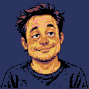
ディーロン128 px / 64 pxキャラクター
現行の顔デザインです。全員正面向きで、90年代の洋画系アドベンチャーゲームに近い素朴なドット絵へ変えました。ディーロンはイーロン・マスクの似顔絵を思わせる顔立ちにし、ディーロンAIにも同じ顔を反映しています。
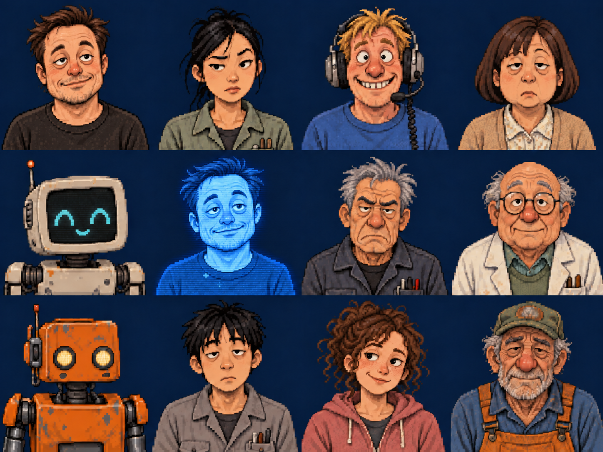
各キャラの個別PNG
128×128 pxは720×720・640×480画面用、64×64 pxは360×360・320×240画面用です。128版を先に制作し、64版はその絵から仕上げました。背景は単色に揃え、輪郭のにじみや孤立した点を除いています。各画像は不透明PNGで、Pyxel標準16色に合わせています。


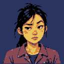
マヤ128 px / 64 px

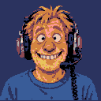
ケン128 px / 64 px

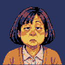
サラ128 px / 64 px

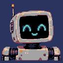
ノア128 px / 64 px

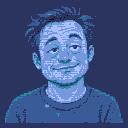
ディーロンAI128 px / 64 px

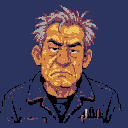
グレイ128 px / 64 px

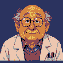
ドク・ヒューズ128 px / 64 px

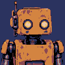
ボルト128 px / 64 px

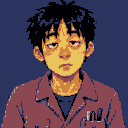
ハシモト128 px / 64 px

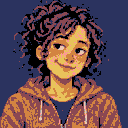
ミミ128 px / 64 px

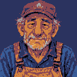
ゲンさん128 px / 64 px


ゲーム画面の提案
720×720を先に設計した画面見本です。背景、キャラ、ロケット、計器は実装時に分けて扱います。
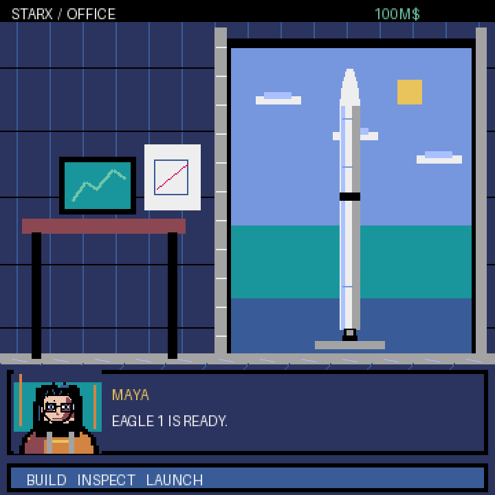
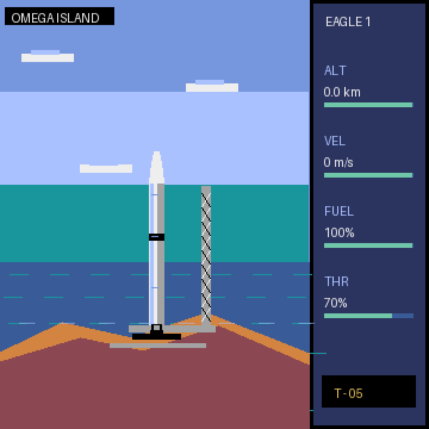
先に作った640×480の会社画面と打ち上げ画面は初期ラフとして残しています。低解像度版は720版の構図を基に、文字とシルエットを調整して制作します。


ロケットのシルエット
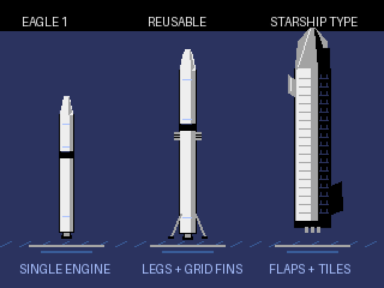
Starship V3の黒い面と銀色の面
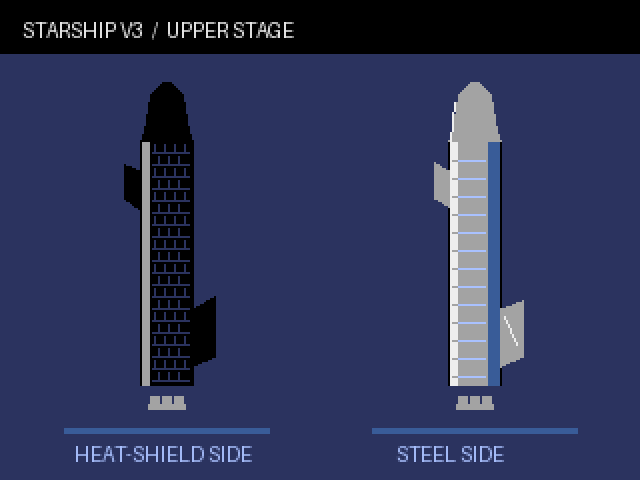
Eagle 1
物語の初期機体として、細い二段式と単発エンジンを強調しました。白い円筒に左側の反射光と右側の影、黒い段間を置いて立体感を出します。
再使用型・Starship型
次世代機にはグリッドフィンと着陸脚を追加。さらに大型の案にはステンレス色の船体、黒い耐熱タイル、前後フラップを使います。
形状の参考：SpaceXのFalcon 9公式ページ、Falconユーザーガイド、Starship公式ページ、V3初飛行の報告、V3の耐熱タイル試験の報告。
現状の作りと実装メモ
人物はPNGを読み込んで表示しています。一方、会社背景・打ち上げ背景・ロケットは主にPyxelの図形を組み合わせて描画しています。背景画面案をそのまま一枚の画像に置換すると、高度による空の変化やロケットの回転が失われます。背景と動く物体を分けて実装するための設計見本です。
詳しい仕様と素材の使い方は説明書に記載しました。元の編集用データはリポジトリの art/redesign_proposal にあります。